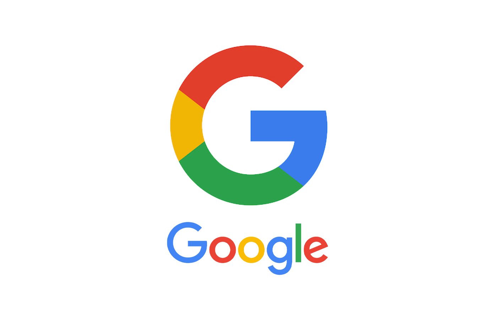
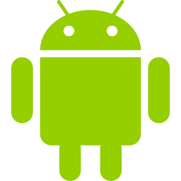
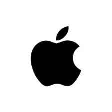
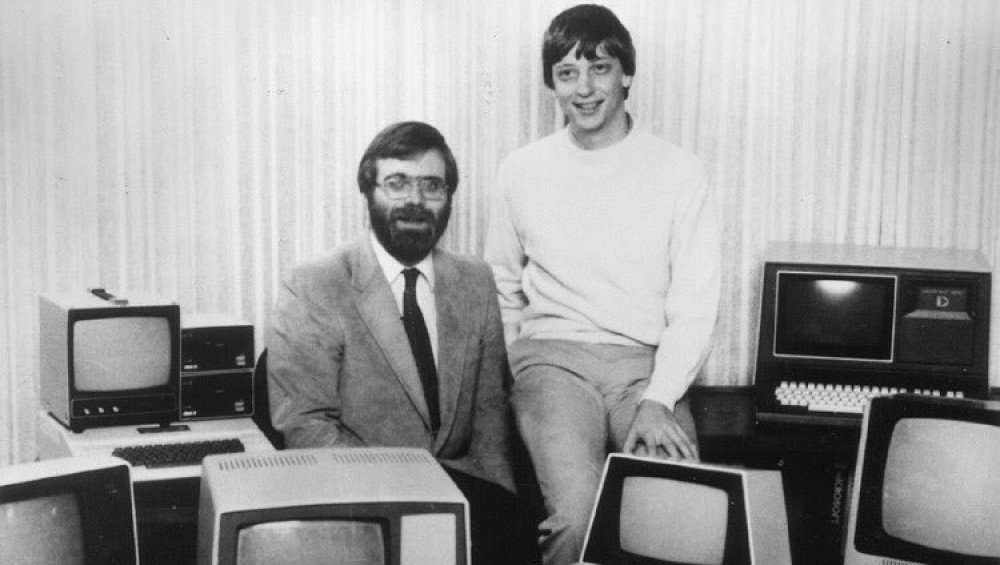
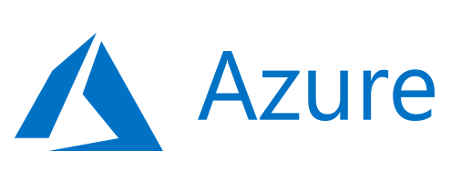
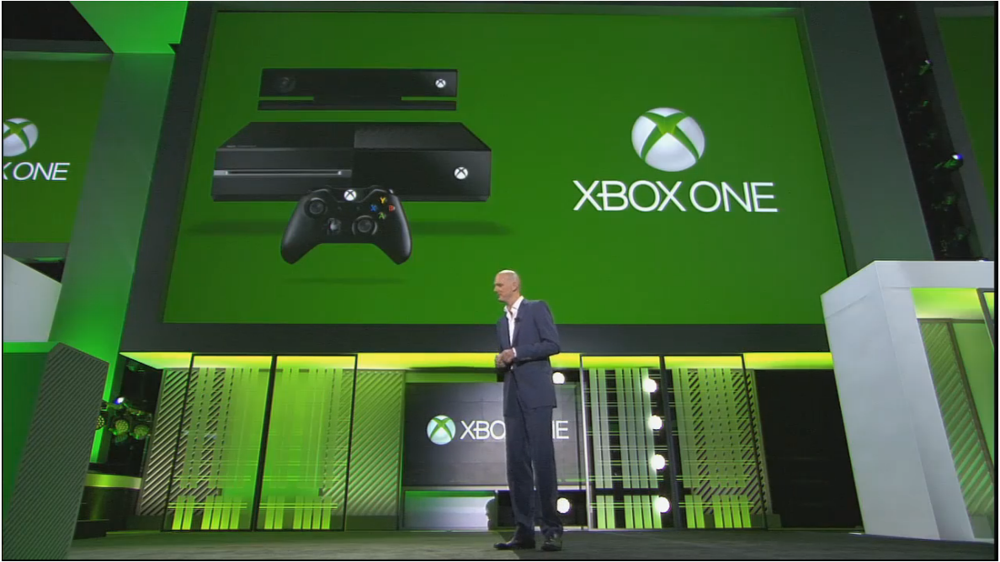

GAFAM
Le GAFAM est constitué du quatuor initial GAFA (Google, Apple, Facebook, Amazon) auquel on a ensuite
ajouté le M de Microsoft. Ces 5 entreprises représentaient fin 2020 les 5 plus grandes
capitalisations boursières de la cote américiane.
Fin octobre 2020, la capitalisation boursière cumulée du GAFAM représentait plus de la moitié de la
capitalisation totale de l'indice Dow Jones et près du quart (23%) de la capitalisation des 500 plus
grandes entreprises américianes (Standard & Poors 500).
Une représentation visuelle de la façon dont les entreprises GAFAM ont progressivement dominé le
monde financier en termes de capitalisations boursières.
Ces entreprises stars de la Silicon Valley californienne, ont envahi notre quotidien. Elles ont même
fait des petits avec les NATU pour Netflix, Airbnb, Tesla et Uber. Ces entreprises ont su renouveler
au 21ème siècle le mythe américain des chercheurs d’or ou de pétrole devenus milliardaires en
quelques coups de pioche.
Ces start-ups parfois créées dans un garage sont ainsi devenues les plus grandes capitalisations
boursières mondiales, et leurs patrons, des références iconiques de l’entrepreneur à succès.
Pourtant elles sont de plus en plus décriées pour leur mainmise tentaculaire sur l’économie mondiale
et leur pratique de corsaire fiscal. Elles menaceraient même la souveraineté des Etats.
Ces entreprises ont parfois à peine 20 ans (Facebook a été créé en 2004 et Google en 1998) et
pourtant la capitalisation de chacune d’elles, à l’exception de Facebook dépasse les 1 000 milliards
de dollars. Pour donner un ordre de grandeur – bien que pas directement comparable – c’est
l’équivalent du PIB d’un pays comme les Pays-Bas, qui émarge tout de même à la 17e place du
classement des pays les plus riches du monde.
A eux 5, les GAFAM sont davantage valorisés que le montant du PIB du Japon, de l’Allemagne ou de la
France !
Pourquoi un tel engouement des investisseurs ? Car ces entreprises sont au cœur des nouvelles
économies numériques. Or, dans ce nouveau modèle d’activité le terrain de jeu n’est pas national, il
est immédiatement mondial et le leader rafle la mise en anéantissant du même coup toute la
concurrence. Conséquence, les chiffres deviennent vertigineux par rapport aux entreprises
traditionnelles.
Ainsi, Google concentre à lui seul plus de 90 % des requêtes sur internet dans le monde. YouTube, le
diffuseur de vidéo sur internet (racheté par Google en 2006 pour seulement 1,65 milliard de dollars
à l’époque) est vu bien plus que n’importe quelle chaîne de télévision : chaque jour, plus d’un
milliard d’heures de vidéos sont ainsi visionnées. Facebook, quant à lui, totalise, en octobre 2020,
plus de 2,7 milliards d’utilisateurs actifs mensuels..
Pour utiliser ces services, les consommateurs passent maintenant majoritairement par leur téléphone
portable et c’est vers ceux de la marque Apple qu’ils se tournent le plus en valeur : fin 2019, elle
concentrait, à elle seule, 32 % du chiffre d’affaires et 66 % des bénéfices du marché des
smartphones.
Les cartels ou les monopoles ne permettent pas une optimisation des prix de marché : sans
concurrent, l’entreprise peut fixer un prix de vente supérieur pour ses produits et se constituer
une rente.
Pourtant, Google est gratuit tout comme Facebook. C’est là l’illusion entretenue par ces entreprises
de la nouvelle économie numérique : elles ne semblent pas vendre véritablement de nouveaux produits
mais servir plutôt d’interface, la preuve avec leurs chiffres d’affaires de dizaines, voire de
centaines de milliards.
Google
Google est une entreprise américaine de services technologiques fondée en 1998 dans la Silicon
Valley, en Californie, par Larry Page et Sergey Brin, créateurs du moteur de recherche
Google.L'entreprise s'est principalement fait connaître à travers la situation monopolistique
de son moteur de recherche, concurrencé historiquement par AltaVista puis par Yahoo! et Bing.
Elle a ensuite procédé à de nombreuses acquisitions et développements et détient aujourd'hui de
nombreux logiciels et sites web notables parmi lesquels YouTube, le système d'exploitation pour
téléphones mobiles Android, ainsi que d'autres services tels que Gmail, Google Earth, Google
Maps ou Google Play.
1998

1997
Le nom de domaine “Google.com” a été enregistré par Larry Page et Sergey Brin, le 1 septembre
1997.
Seulement 2 ans après sa création, Google atteint son premier milliard de pages indexées. L’an
2000 marque aussi l’arrivée des publicités ciblées en fonction des mots-clés recherchés sur
Google, la première barre d’outils du moteur de recherche et la naissance de AdWords.
2000
2001
Google obtient la validation de son brevet pour PageRank et atteint les 3 milliards de pages
indexées.
Google lance son service Google News.
2002
2004
La firme lance son premier réseau social Orkut, qui sera un échec, ainsi que son client Gmail.
Google voit sa demande d’entrée au NASDAQ acceptée, l’entreprise vend ainsi 19 605 052 actions,
au prix unitaire de $85.
Google annonce Maps, Google reader, Google Analytics.
2005
2006
Google multiplie ses services avec Finance, Trends, Calendar ou Books.Google rachète YouTube.
Le 5 novembre 2007, la firme annonce un nouvel OS pour téléphone mobile, Android est né.
2007

2008
Google lance son propre navigateur, ce sont les débuts de Chrome.
Le 7 juillet 2009, Google a annoncé le projet de développement Chrome OS, un système
d'exploitation open-source basé sur LinuxGblog 29. Cet OS se veut léger et adapté aux netbooks
en plein essor.
2009
2010
Dans la lignée de son nouvel OS mobile, Google lance présente son nouveau téléphone, le Nexus
One, créé en partenariat avec HTC.
Cette année-là, une attaque pirate massive en Chine compromet des données de Google. La firme
menace de ne plus appliquer aucune des censures exigées par le gouvernement chinois, au risque
de devoir stopper ses activités dans le pays.
Google annonce une mise à jour de son algorithme Panda, qui pénalise désormais les sites sans
valeur ajoutée. La firme retente sa chance dans les réseaux sociaux avec Google+, annoncé cette
même année. L’entreprise atteint le milliard de visiteurs uniques par mois.
2011
2014
Google rachète Deepmind, startup spécialisée dans l’intelligence artificielle, ainsi que Green
Throttle Games, spécialisée dans les jeux vidéo.
Aujourd’hui, Google recense plus de 30 000 milliards de pages, 3 milliards de requêtes par jour
et 110,85 milliards de dollars de chiffre d’affaires annuel.
2015
Amazon
Amazon est un détaillant en ligne massif qui a une capitalisation boursière de 2018 supérieure à un
milliard de dollars américains en juin. En plus d'être un détaillant en ligne, Amazon permet aux
particuliers et aux entreprises de vendre et d'afficher des produits en ligne. Il est le plus grand
détaillant d'Internet au monde en termes de chiffre d'affaires.
Amazon est l'un des marchés en ligne les plus populaires utilisés à la fois par les particuliers et
les entreprises, et le site est disponible dans de nombreux pays et langues. Amazon Kindle est l'un
de ses produits les plus populaires, ainsi que l'App Store d'Amazon. Enfin, Amazon propose des
solutions logicielles et d’infrastructure pour les entreprises et les particuliers.
Lancement d’Amazon, au départ, Amazon n’était qu’une entreprise de vente en ligne de livres dont
les fondateurs n’avaient aucune expérience en la matière.
1995
1999
Entrée en bouse en 1997.Amazon devient leader de la vente en ligne. Amazon décide de
diversifier son offre et débute par la vente de musique et de DVD. Par la suite, elle attaque le
marché de l’électronique, des jouets et du matériel de cuisine.
Lancement de l’abonnement Prime
Après la mise en place de l’Amazon Marketplace en 2000 qui décentralisa la plate-forme, Amazon
décida d’améliorer le service de livraison qui récompensera la fidélité des clients.
2005
2007
Lancement de Kindle
Amazon ne s’est jamais départie de sa casquette de vendeur de livres. Son fondateur Jeff Bezos a
profité de l’avènement des livres électroniques afin de procéder au lancement de Kindle en 2007,
ce qui permit à l’entreprise de remporter la palme dans ce domaine.
Lancement d’Amazon Prime Video en France. Plateforme de streaming et de vidéos à la demande
comprise dans l’abonnement Prime.
2019
2021
Jeff Bedos quitte Amazon. Andy Jassy est le prochain PDG de la firme.
Facebook
Facebook est un réseau social Internet qui permet de rester en contact et d’échanger des informations
avec des amis, des collègues de travail, des prospects, des clients, des partenaires.
Destiné dans un premier temps aux étudiants de l’université d’Harvard à laquelle Mark Zuckerberg
appartenait, le célèbre réseau social est, depuis 2006, accessible à toutes les tranches d’âge à
partir de 13 ans.
Mark Zuckerberg lance le site TheFacebook.com le 5 février 2004, sur le principe du
trombinoscope, avec trois autres étudiants d'Harvard.
2004
2006
Devenu un an plus tôt Facebook, le site s'ouvre à tous les internautes âgés d'au moins 13 ans et
disposant d'une adresse de courriel valide, le 26 septembre 2006.
Facebook compte 100 millions de membres inscrits le 26 août 2008.
2008
2012
Facebook entre en Bourse (Nasdaq) avec un résultat décevant, du moins dans un premier temps.
Facebook rachète Instagram pour un 1 milliard de dollars.
2012
2014
Facebook rachète WhatsApp pour 16 milliards de dollars.
La capitalisation boursière de Facebook atteint 630 milliards de dollars à wall street.
Le PDG de Facebook s'est présenté au Parlement européen ce mardi pour s'expliquer sur le
scandale Cambridge Analytica.
2018
2018
Le PDG de Facebook s'est présenté au Parlement européen ce mardi pour s'expliquer sur le
scandale Cambridge Analytica.
Facebook est l’application la plus téléchargée chaque mois sur mobile, tablettes ou smartphones
2019
Apple
Apple, Inc. (Apple Computer, Inc. jusqu'en janvier 2007 ; apple signifie " pomme " en anglais)
(NASDAQ : AAPL) est une société multinationale dont l'activité principale était de fabriquer et de
vendre des ordinateurs (y compris le système d'exploitation).
La marque a popularisé de nombreux concepts qui ont révolutionné l'informatique. Elle doit à ses
débuts sa fortune à l'Apple II qui a connu un énorme succès au début des années 1980 et s'est vendu
à plusieurs millions d'exemplaires.
Lancement d’Apple le 1er avril 1976 dans le garage de la maison d'enfance de Steve Jobs à Los
Altos en Californie par Steve Jobs, Steve Wozniak et Ronald Wayne
1976
1977
Apple crée et commercialise sa deuxième machine : l’Apple II
Apple crée et commercialise sa troisième machine : l’Apple III.
Malgré les déboires que connaît Apple, la firme est introduite en bourse le 12 décembre 1980.
1980
1983
Lancemement d’une nouvelle machine : l’Apple Lisa qui sera un échec .
Sortie du premier Macintosh, lancé en grande pompe avec le spot publicitaire 1984, diffusé 2
jours avant sa sortie lors de la finale du Super Bowl XVIII, le 22 janvier 1984.
1984
1985
En septembre 1985, Steve Jobs quitte Apple pour fonder sa propre compagnie Next, Inc.
Steve Jobs lance sa compagnie NeXT, entreprise d’informatique américaine, basée à Redwood City,
en Californie, qui a développé et construit une série d'ordinateurs destinés à l'enseignement
supérieur et aux entreprises.
Steve Jobs rachète les studios Pixar.Analytica.
1986
1989
Le Macintosh Portable fut la première tentative d'Apple pour faire un Macintosh plus facilement
transportable. Lancé en septembre 1989, il fut accueilli avec beaucoup d'enthousiasme par la
critique, mais il s'en vendit peu durant les deux ans de sa commercialisation.
Lancement du Powerbook qui possède la même capacité que le mac portable mais beaucoup moins
lourd.
1991
1993
Lancement du Newton, assistant personnel numérique mis sur le marché par Apple le 2 août 1993 et
abandonné en 1998. Il préfigure la tablette tactile.
Lancement de la gamme PowerMac avec le processeur Power PC. Apple se lance également sur un
nouveau marché avec QuickTake, l'un des premiers appareils photo numérique destinés au grand
public.
1994
1998
Apple achète NeXT la société de Steve Jobs et l’embauche en tant que conseiller.
Steve Jobs reprends Apple.Rassemblement de toutes les gammes en 2 lignes de produits : Le
Powerbook G3 / Le Power Macintosh G3+.
1998
1998
Appel fait peau neuve.Nouvelle campagne de publicité, nouveau logo pour le lancement de l’iMac.
Commercialisation de l’iMac et l’iBook qui rencontre un fort succès.
1999

2001
Cinq mois après l'ouverture de ses premiers Apple Store, Apple lance son baladeur numérique,
l'iPod. Le premier modèle lancé en octobre 2001, est doté d'un disque dur de 5GB pouvant
contenir, selon Apple, 1 000 chansons. Apple a par la suite fait évoluer son iPod et a élargi la
famille en lançant de nouveaux modèles. Le produit rencontre un grand succès.
Lancement de iTunes disponible sur toutes les machines Mac et PC
2003
2007
Lancement du premier iPhone (écran tactile, navigateur web simplifié).
Lancement de l’iPad, première tablette tactile.
C’est un succès dès le jour de sa sortie.
2010
2011
Apple fait état d'un bénéfice trimestriel record de 6 milliards de dollars pour un chiffre
d'affaires de 26,74 milliards.
Lancement de l’iCloud, service gratuit de stockage de données en ligne, le 6 juin 2011.
Steve Jobs démissionne et est remplacé par Tim Cook. S. Jobs décède le 5 octobre 2011.
Le 28 mai 2014, Apple achète Beats Electronics et Beats Music pour 3 milliards de dollars.
2014
2018
La capitalisation boursière de l'entreprise continue à augmenter, surtout à travers le succès
des models successifs de l'iPhone ainsi que par la progression de ses services (iTunes Store,
iCloud, Apple Music, Apple Pay...), et le 2 août 2018, Apple devient la première entreprise
privée de l'histoire à dépasser une capitalisation de 1000 milliards de dollars.
Microsoft
est une multinationale informatique et micro-informatique américaine, fondée en 1975 par Bill Gates et Paul Allen.
Microsoft fait partie des principales capitalisations boursières du NASDAQ8, aux côtés d'Apple et d'Amazon.
Son activité principale consiste à développer et vendre des systèmes d’exploitation, des logiciels et des produits matériels dérivés.
Lancement de Microsoft le 4 avril 1975 Microsoft (qui s'est d'abord appelé Micro-Soft)
par Paul Allen et Bill Gates, tous deux étudiants à Harvard.
1975

1980
Bill Gates signe le 6 novembre 1980 un contrat qui va faire entrer Microsoft dans la cour des grands.
L'éditeur, qui n'est encore qu'une start-up, est choisi par IBM pour développer l'OS de sa première ligne de PC.
Microsoft entre en bourse en mars 1986, et atteint très vite
l'une des premières places du marché en termes de capitalisation boursière.
1986
1989
Lancement de la première version d'Office le 8 août 1989. Office version 1 est lancé. D'abord commercialisé pour Mac,
la suite regroupe dans la même boite les logiciels bureautiques que Microsoft vendait séparément depuis 1983.
Windows NT (3.1) est lancé en 1993. C'est la première déclinaison de Windows véritablement taillée pour le monde de l'entreprise.
1993
1995
Sortie de Windows 95 le 24 août 1995. Windows 95 atteint une part de marché de près de 70% en 1997.
Lancé le 22 juin 2000 lors d'une conférence de Bill Gates et Steve Ballmer, ".Net" ("dot Net" en anglais) dessine la stratégie "tout Internet" de Microsoft.
Objectif : faire évoluer les solutions Windows, serveur et poste de travail, vers un environnement applicatif de nouvelle génération.
2000
2001
Microsoft lance la Xbox le 15 novemebre 2001. Ils souhaitent rivaliser avec Sony et la PlayStation.
Microsoft et ses partenaires lancent Tablet PC le 7 novemebre 2002.
2002

2008
Microsoft lève le voile en octobre 2008 sur le projet Windows Azure.
Les premiers services Azure seront commercialisés en 2010. Il s'agit dans un premier temps d'un cloud de plateforme.
Microsoft lance Windows 8 et Microsoft Surface le 26 octobre 2012.
2012

2013
Microsoft lance Xbox One le 22 novembre 2013.
Le 4 février 2014, Satya Nadella qui était alors vice-président Enterprise et Cloud de Microsoft, est nommé PDG.
Il succède à Steve Ballmer qui avait lui-même succédé à Bill Gates 14 ans auparavant.
2014
2015
Windows 10 est lancé en 2015.
Au-delà de son caractère multiplateforme, il a pour but de faire entrer Windows dans l'ère de l'innovation.
Microsoft finalise l’acquisition de LinkedIn le 8 décembre 2016.
2016
2017
Microsoft annonce un nouveau campus durable dans la Silicon Valley.
1 an plus tard Microsoft inaugure un nouveau campus à Dublin, en Irlande.
Durant l'année 2020, la société annonce progressivement ses consoles de nouvelle génération74,
la Xbox Series X et la Xbox Series S pour une sortie face à la Playstation 5 de Sony en novembre.
2020